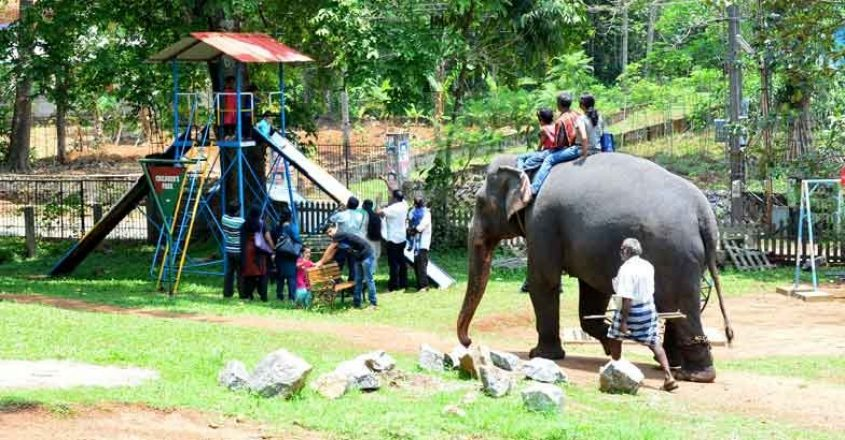
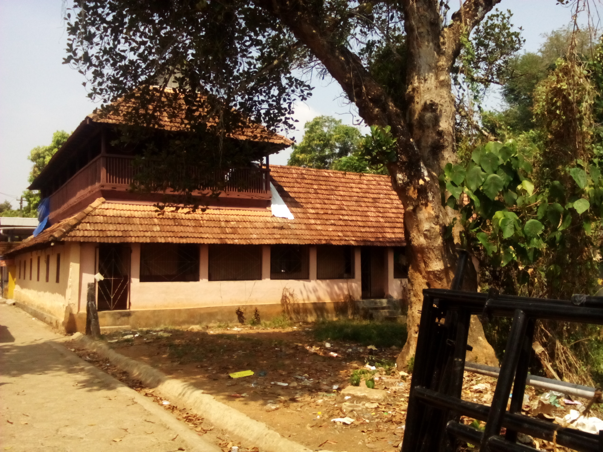

1.perunthenaruvi waterfall
1.perunthenaruvi waterfall
The name Perunthenaruvi means the great stream of honey and this beautiful waterfall is located at a distance of 26kms from Pathanamthitta. Through Vadasserikkara & Perunad, the Perunthenaruvi waterfalls can be accessed. You can even opt for the bus service. Surprisingly, this isn’t just a single waterfall but two. Yes, Panamkudantha and Padivathil at 300 and 200 feet respectively. Both these waterfalls start their journey from Sabarimala.
The water that falls down a rough bed and goes down into a pool through several streams from 60 to 100 meters in height is a treat to the eyes. This is a great place to relax and play with friends/family on the beach and enjoy the panoramic views. This is one of the places to visit in Pathanamthitta that shouldn’t be skipped.

2.konni
Elephant Training Center is the main attraction of the place and is located in the middle of a dense forest. This place was once used to train wild elephants. This location is the main attraction of the locally known “aanakoodu,” the large wooden cages made for elephants. Kerala, in general, is a home for a lot of Elephants and Konni has the largest part of the population.
Travelling here from Pathanamthitta won’t be a hassle as the buses are frequently available. Witness the behaviour of such a massive animal at such proximity is just beautiful and you get to ride on them as well. The bigger elephants are also found in woodland areas next to the training centre. This is one of the ideal places to visit in Pathanamthitta.
 3. Sabarimala Temple
3. Sabarimala Temple
This is by far the most famous pilgrim centre in the whole of Kerala. Every year the place receives visitors as tourists and also as devotees. It is estimated that about 40 million visitors come to visit this place. In fact, it is situated at an altitude of 3000 feet along the green covered western ghats. The two marque festivals are in the month of January, namely – Mandala pooja and Makaravilakku. The temple has some strict restrictions in terms of your attire and by strict, I mean “STRICT”. Make sure to know them before you visit this place.
Women between the ages of 11-50 are not allowed inside the temple, whereas men of all ages can visit the temple. This also one of the oldest temples in India dating all the way back to the 11th century. During the festive season, there will be devotees in millions visiting this place by foot. The path used to reach the temple is also not the best that you can get. This is one of the spiritual places to visit in Pathanamthitta.

4.Pandalam palace
Pandalam is located at a distance of 16 km from Pathanamthitta. The place has a few famous attractions with the likes of Sri Ayyappa Temple, Pandalam Palace & Pattupurukavu Temple. Also, people believe that this is the birthplace of Lord Ayappa. Hence before reaching the Main pilgrimage Sabarimala, it is common for the deities to stop at Pandalam Ayyapan Temple. The temple aslo has festive seasons and that is during the month of January.
The Pandalam palace is located in the same village Pandalam. The palace is believed to be the place where Lord Ayyapa’s spent most of his childhood days. Although a large proportion of the original structure disappeared through flood and fire, some remain. Today, the Valiyakoikkal Temple and Kaipuzha Temple are two palace complexes. As this place has fascinating stories and evidence to support them, you should visit this place at least find that out for yourself, of not for the spiritual reason.